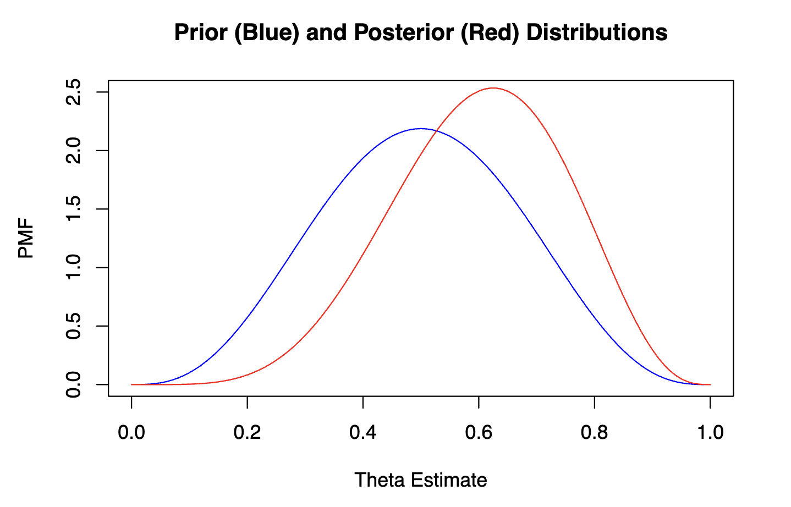
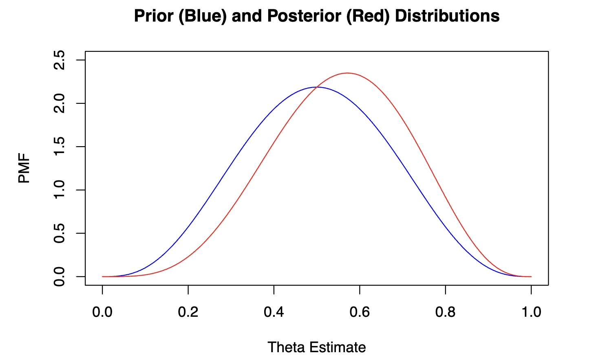

Bayesian Analysis
 Another statistical modeling method that I have enjoyed learning about recently has been bayesian analysis. After working in the non-bayesian world of data science for the majority of my career, learning about subjective statistics completely changed my perspective on the world of data. Although it was not an easy transition to make at first, I've now become confident in incorporating Bayesian statistics into my data science toolkit, with the help of R packages such as Rjags.
 These two visualizations were created for a simulated coin flip experiment performed in R, in which I was updating the posterior distribution based on the results of each coin flip. This was a very effective way to further understand how the posterior distribution changes based on our observed experiences in a Bayesian statistics environment, and also allowed for me to visualize how the posterior distribution evolves away from the prior distribution as more observations are recorded.